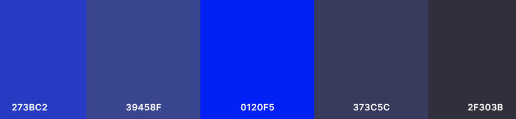
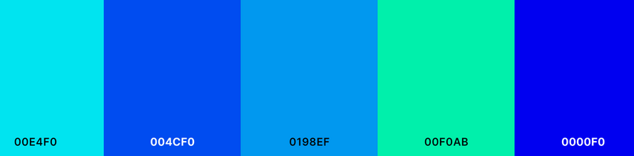
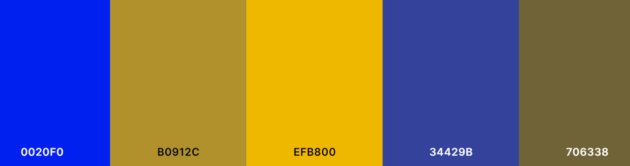

Color Theory
Monochromatic
This palette has very a uniform feel to it. Monochromatic palettes are a very reliable go-to for most designers. It makes ensures that whatever palette you generate will have compatible colors within it.
Analogous
Instead of relying only one color, Analogous palettes take their neighboring colors on the color wheel to form a color palette. This allows for a variety in the colors available in the palette without the colors clashing with each other.
Complementary
Lastly, Complementary palettes are what you get when take two colors on opposing sides of the color wheel. This type of palette allows for more freedom in color choice and allows for the colors to be contrasting with one another.